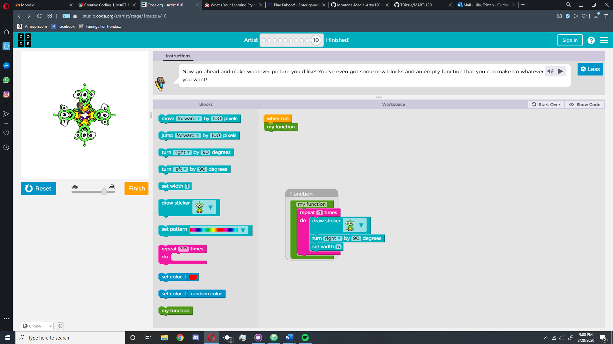
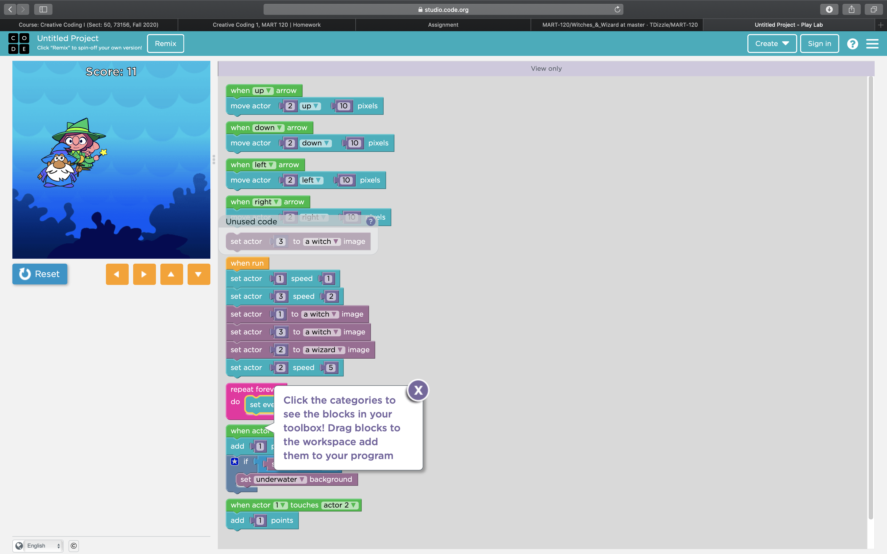
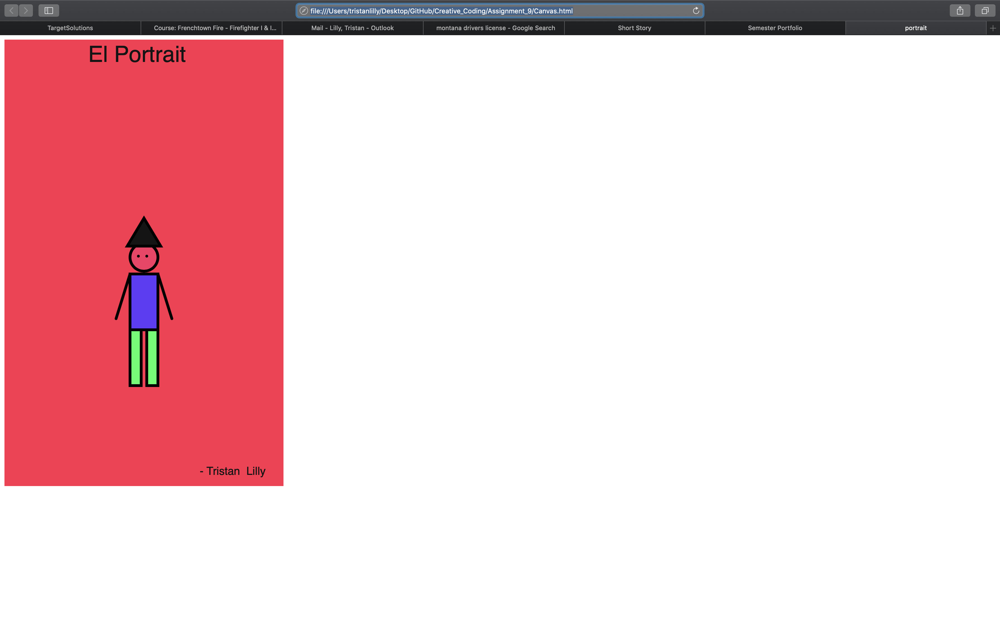
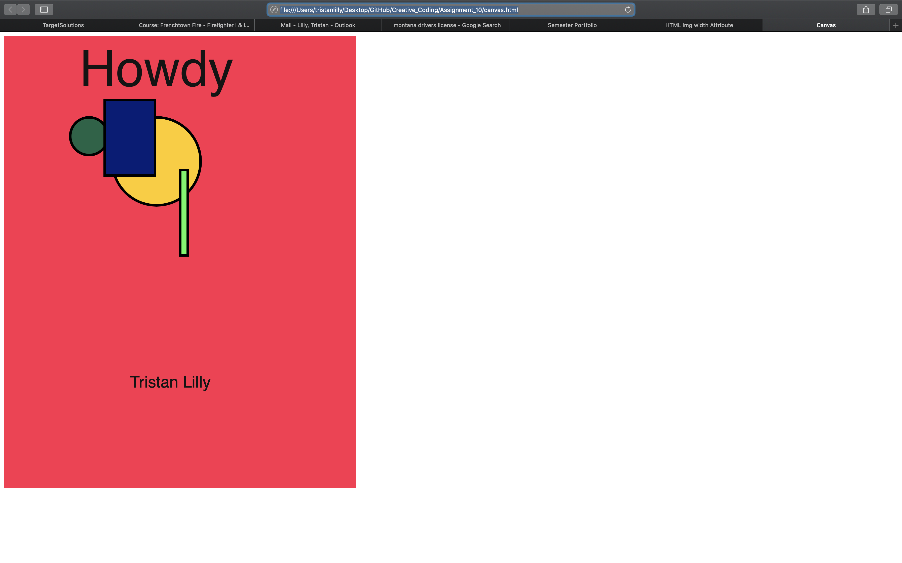
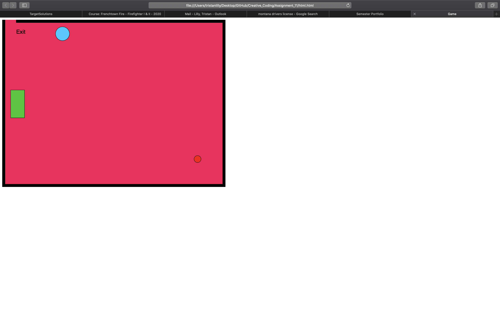
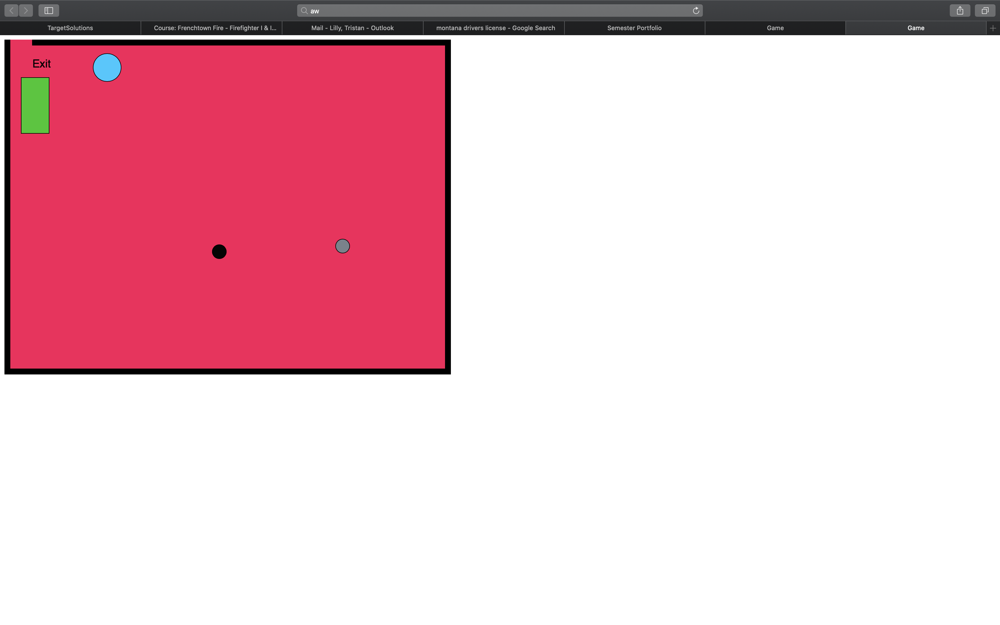
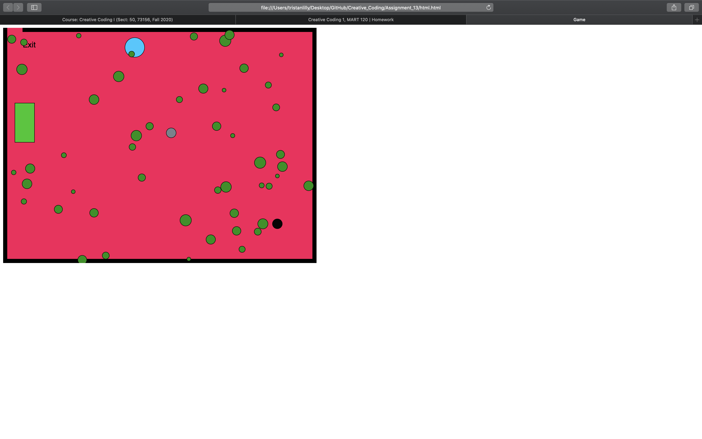

Semester Projects!
Assignment_2

For this assigment, we had to draw a picture using the commands in the program.
Assignment_4

For this assignment, I created a wizard who is running from two witches.
The wizard is contronlled by the user, and points add up whenever the wizard bumps into a witch.
Assignment_9

For this assignment we created "self portraits".
Assignment_10

For this assignment, we created a canvas which included moving objects and words which increased and decreased in size.
Assignment_11

For this assignment, we added onto the previous assignment by turning it into a game.
The circle in the bottom right corner is controlled by the player and must be navigated to the exit.
Assignment_12

For this assignment, we added more objects to the game.
Assignment_13

For this assignment, we added even more objects to the game.
Bubbles of random sizes moving across the screen diagonally from left to right and top to bottom.
Home